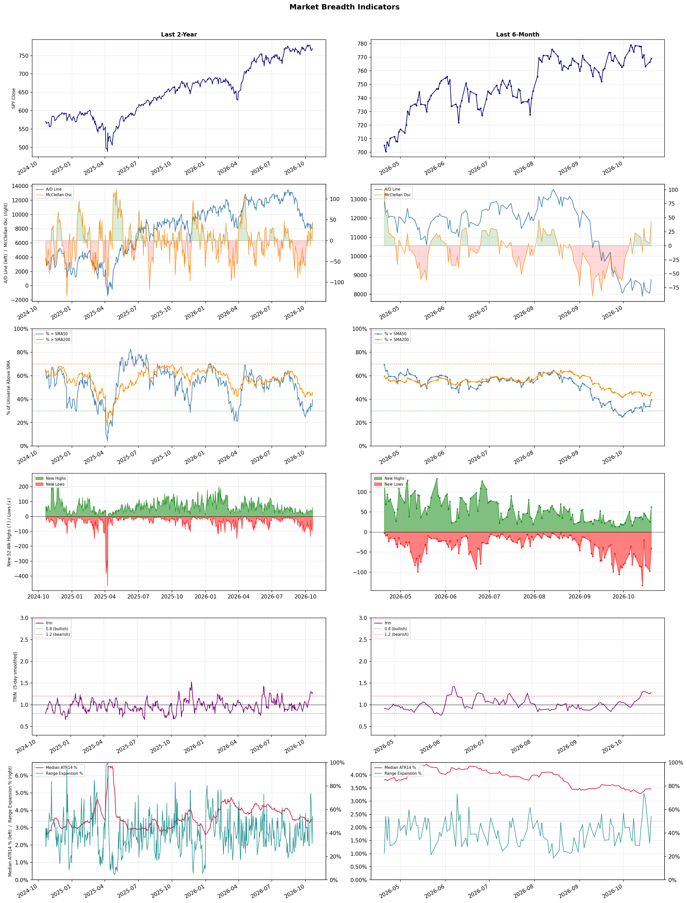

A daily market breadth and sector rotation report for active investors
| Item | Read |
|---|---|
| Regime | Defensive |
| Risk posture | Defensive |
| Universe | 1,315 stocks tracked · 62 new 52-week highs · 30 active swing setups |
| Breadth | only 39.6% of tracked stocks are above SMA50, new highs exceed new lows (62 vs 41) |
| Leadership | Oil & Gas Refining & Marketing, Oil & Gas Integrated, and Oil & Gas E&P |
| Weakest groups | Uranium, Electrical Equipment & Parts, and Other Industrial Metals & Mining |
Use this report to prioritize research and chart review; validate entries, stops, liquidity, earnings, and risk before acting.
| Item | Read |
|---|---|
| Primary read | Defensive regime with Defensive risk posture. |
| Research queue | MPC, VLO, PSX, DINO, PBF |
| Leadership focus | Oil & Gas Refining & Marketing, Oil & Gas Integrated, and Oil & Gas E&P |
| Caution list | Uranium, Electrical Equipment & Parts, and Other Industrial Metals & Mining |
| Review prompt | Check extension risk, chart location, fundamentals, valuation, and earnings before using any research row. |
| Item | Read |
|---|---|
| Primary read | 2 active risk warnings; use screen output as watchlist input only. |
| Bullish screens | MUR, PEB, HTFL, PGR, BOX |
| Bearish screens | BRUN, LAES, PSEC, QFIN, MPT |
| Alerts / levels | Automated trigger, stop, ATR, liquidity, reward/risk, and event-risk levels are pending future enrichment. |
| Review prompt | Open the linked chart, define trigger and invalidation, then check liquidity and event risk independently. |
Risk Posture: Defensive — screen backdrop favors caution; require independent risk review before new exposure
Metric context: McClellan below -50 = elevated selling pressure; below -100 = washout territory. Range Expansion = share of stocks with daily range above their 20-day average. Signal Density = share of tracked names appearing in signal screens.
| Breadth Date | % > SMA50 | % > SMA200 | New Highs | New Lows | McClellan | Median Range | Avg Range | Median ATR14 | Range Expansion | Signal Density |
|---|---|---|---|---|---|---|---|---|---|---|
| 2026-10-20 | 39.6% | 45.9% | 62 | 41 | 44.2 | 3.3% | 3.9% | 3.5% | 54.3% | 4.6% |

Prior comparison date: October 19, 2026
| Metric | Prior | Current | Change |
|---|---|---|---|
| Regime | Defensive | Defensive | unchanged |
| Risk Posture | Defensive | Defensive | unchanged |
| % > SMA50 | 33.7% | 39.6% | +5.9 pts |
| % > SMA200 | 43.1% | 45.9% | +2.8 pts |
| New Highs | 26 | 62 | +36 |
| New Lows | 97 | 41 | +56 |
Top-10 industries entering: none. Top-10 industries leaving: none. New multi-signal long setups: ARQT, GMAB, HTFL, META, MTCH, MUR, PAGS, PGR. New multi-signal short setups: MPT, QFIN.
| Status | Tickers | Read |
|---|---|---|
| Added | ALHC, ARQT, AZTA, BLMN, CRGY, FRO, GMAB, HTFL | New technical screen matches vs prior report. |
| Removed | AGNC, APA, ARR, BLDP, BRSL, BTBT, BTE, BXMT | No longer present in today's technical screen matches. |
| Still Active | BOX, BRUN, HALO, LAES, PEB, PSEC | Appeared in both current and prior reports. |
| Promoted | none | Model Screen Score improved by at least 15 points. |
| Downgraded | none | Model Screen Score declined by at least 15 points. |
| Direction | Industry | ETF | Prior Rank | Current Rank | Days | Rank Change |
|---|---|---|---|---|---|---|
| Rose | Apparel Manufacturing | N/A | 82 | 10 | 42 | +72 |
| Rose | Restaurants | N/A | 81 | 19 | 28 | +62 |
| Rose | Footwear & Accessories | N/A | 87 | 30 | 42 | +57 |
| Rose | REIT - Hotel & Motel | XLRE | 60 | 5 | 28 | +55 |
| Rose | Leisure | N/A | 85 | 31 | 28 | +54 |
Bull: The Apparel Manufacturing sector is experiencing rising relative strength due to favorable industry trends, including anticipated gains from trade deals and a strategic shift in sourcing from China, as highlighted in recent headlines. These developments are likely to enhance profitability and operational efficiency for textile-apparel companies, making them attractive investments for the future, as noted in analyses from Yahoo Finance and The Motley Fool. Additionally, the positive sentiment surrounding the sector is reinforced by multiple sources identifying top-performing stocks, indicating strong investor confidence in the industry's growth trajectory leading into 2026.
Bear: While the Apparel Manufacturing sector may currently exhibit rising relative strength, this optimism overlooks significant headwinds such as ongoing supply chain disruptions, inflationary pressures on raw materials, and the potential for increased labor costs as companies seek to diversify sourcing away from China. Additionally, the competitive landscape remains fierce, with fast fashion and e-commerce giants continuing to dominate market share, which could undermine the profitability of traditional textile-apparel companies despite favorable industry trends.
Verdict: The Apparel Manufacturing sector is likely experiencing rising relative strength due to strategic shifts in sourcing away from China and anticipated gains from trade deals, which could enhance profitability and operational efficiency. However, investors should remain cautious of significant risks, including ongoing supply chain disruptions and inflationary pressures on raw materials, which could erode margins and hinder growth despite the current positive sentiment.
Sources: Google News
Bull: The rising relative strength of the restaurant industry can be attributed to a combination of resilient consumer spending and strategic positioning by leading companies, as highlighted in the recent headlines. Despite some short-term volatility, such as Chipotle's dip, analysts are optimistic about the industry's ability to thrive amid headwinds, with reports identifying key players like Restaurant Brands International (QSR) that are poised for growth. Additionally, the emergence of tokenized restaurant stocks and the focus on investment opportunities in restaurant ETFs suggest a growing interest and confidence in the sector's long-term potential.
Bear: While the rising relative strength of the restaurant industry may seem promising, it is crucial to consider the broader economic context, including potential inflationary pressures and changing consumer behaviors that could dampen spending in the sector. The recent dip in stocks like Chipotle, along with McDonald's and Starbucks, indicates that even established brands are not immune to market volatility, suggesting that the optimism surrounding resilient consumer spending may be overestimated. Furthermore, the emergence of tokenized stocks could introduce additional risks and uncertainties that may overshadow the perceived growth potential of the industry.
Verdict: The restaurant industry's rising strength is fundamentally driven by resilient consumer spending and strategic positioning by key players, indicating a robust recovery post-pandemic. However, the key risk lies in potential inflationary pressures and shifting consumer behaviors, which could dampen spending and lead to increased volatility in stock performance, as evidenced by recent dips in major brands like Chipotle and McDonald's. Investors should remain cautious and monitor economic indicators closely while considering opportunities in well-positioned companies and restaurant ETFs.
Sources: Google News
Bull: The Footwear & Accessories sector is experiencing a rise in relative strength primarily due to the resilience of consumer discretionary spending, as highlighted by positive Q2 results for companies like Under Armour and VF Corp, indicating strong demand despite cost pressures. Additionally, the focus on innovative product offerings and brand loyalty, as suggested by articles discussing the best shoe stocks for 2026, positions this sector favorably for growth, attracting investor interest amid a competitive landscape.
Bear: While the Footwear & Accessories sector may exhibit rising relative strength, this could be misleading given the broader economic context of persistent cost pressures and inflation that could dampen consumer spending in the long run. The positive Q2 results for companies like Under Armour and VF Corp may not be sustainable, as they could be benefiting from temporary factors such as pent-up demand or seasonal trends rather than a solid foundation of consistent consumer loyalty. Furthermore, the competitive landscape is intensifying, with brands struggling to maintain margins amidst rising input costs, which could ultimately lead to a decline in profitability and investor sentiment.
Verdict: The Footwear & Accessories sector's rising relative strength is primarily driven by resilient consumer discretionary spending and strong demand for innovative products, as evidenced by positive Q2 results from key players like Under Armour and VF Corp. However, the key risk lies in the potential for sustained inflation and cost pressures to erode consumer spending and brand loyalty, which could undermine profitability and investor confidence in the long term. Investors should closely monitor economic indicators and consumer sentiment to assess the sustainability of this growth trend.
Sources: Google News
Bull: The REIT - Hotel & Motel sector is experiencing rising relative strength due to a robust recovery in travel and hospitality demand, as highlighted by positive sentiment in recent headlines like "Host Hotels & Resorts Is The Hot Hotel REIT This Earnings Season," indicating strong earnings performance. Furthermore, articles from Morningstar and The Motley Fool emphasize the potential for growth in key hospitality REITs, suggesting that investor confidence is bolstered by improving occupancy rates and increasing average daily rates, driven by a resurgence in both leisure and business travel.
Bear: While the recent headlines suggest a recovery in the hotel and motel REIT sector, this optimism may overlook significant headwinds that could dampen future performance. Rising interest rates and inflationary pressures could lead to increased borrowing costs and operational expenses for these REITs, potentially squeezing margins and affecting profitability. Additionally, the potential for economic downturns or shifts in consumer behavior—such as increased remote work reducing business travel—could undermine occupancy rates and average daily rates, challenging the sustainability of the current bullish sentiment.
Verdict: The REIT - Hotel & Motel sector is likely experiencing a positive shift due to a strong recovery in travel demand, reflected in rising occupancy rates and average daily rates, which are boosting investor confidence and earnings performance. However, key risks remain, particularly from rising interest rates and inflation, which could increase operational costs and pressure profit margins, potentially undermining the sustainability of this bullish trend. Investors should closely monitor economic indicators and consumer behavior shifts that may impact future demand.
Sources: Google News
Bull: The Leisure sector is experiencing a rise in relative strength primarily due to robust growth opportunities highlighted in recent analyses, such as the identification of "4 Leisure Stocks Offering Growth Amid Industry Pressures" by Yahoo Finance and the focus on "7 Best Travel & Tourism Stocks for 2026" by The Motley Fool. Additionally, the ongoing recovery in travel and tourism post-pandemic, coupled with increased consumer spending on leisure activities, is driving demand, as evidenced by insights into Airbnb's performance against traditional hospitality peers, suggesting a shift in consumer preferences that favors innovative leisure options.
Bear: While the leisure sector may currently exhibit rising relative strength and growth potential, it is crucial to consider the cyclical nature of the industry, which is highlighted in the Seeking Alpha article on PEJ. Factors such as potential economic downturns, rising inflation, and changing consumer spending habits could significantly dampen demand for leisure activities, as consumers prioritize essential expenses over discretionary spending. Additionally, the recovery in travel and tourism could face setbacks from renewed health concerns or geopolitical tensions, undermining the optimistic projections for growth in the sector.
Verdict: The leisure sector's rise is fundamentally driven by a robust recovery in travel and tourism post-pandemic, alongside increased consumer spending on leisure activities, as highlighted by recent analyses showcasing growth opportunities in the industry. However, investors should remain cautious of the cyclical nature of this sector, as potential economic downturns, inflationary pressures, and shifting consumer priorities could significantly impact demand for discretionary spending on leisure activities.
Sources: Google News
| Direction | Industry | ETF | Prior Rank | Current Rank | Days | Rank Change |
|---|---|---|---|---|---|---|
| Fell | Agricultural Inputs | N/A | 6 | 77 | 35 | -71 |
| Fell | Uranium | URA | 20 | 87 | 42 | -67 |
| Fell | Capital Markets | KCE | 9 | 75 | 28 | -66 |
| Fell | Electronic Components | XLK | 4 | 70 | 14 | -66 |
| Fell | Semiconductor Equipment & Materials | SOXX | 5 | 68 | 14 | -63 |
Bear: While the bull analyst suggests that there may be opportunities within the agricultural inputs sector, the fundamental issues of weak monsoon demand and rising costs are unlikely to resolve in the near term, which could lead to sustained earnings pressure. Additionally, the overall relative-strength trend is falling, indicating that investor sentiment is shifting away from this sector, and the broader economic pressures affecting materials may further exacerbate the challenges faced by agricultural inputs. Investors should be cautious, as the potential for identifying resilient stocks may be overshadowed by persistent headwinds and a lack of strong demand drivers.
Bull: The Agricultural Inputs sector is experiencing a decline in relative strength primarily due to weak monsoon demand and rising costs impacting earnings, as highlighted by Indiatimes. This has been compounded by broader economic pressures affecting the materials sector, as noted by Seeking Alpha and Morningstar, which suggest that while the sector is rising, it is underperforming relative to other industries, creating potential opportunities for investors who can identify resilient stocks within the agricultural inputs space.
Verdict: The Agricultural Inputs sector is likely declining due to a combination of weak monsoon demand and rising input costs, which are pressuring earnings and dampening investor sentiment. The key risk from the bear case is that these fundamental issues are expected to persist, potentially leading to sustained earnings pressure and further declines in relative strength. Investors should proceed with caution and focus on identifying stocks with strong fundamentals that can withstand these challenges.
Sources: Google News
Bear: While the bull analyst attributes the recent decline in uranium stocks to a temporary sector correction, the persistent weakness in relative strength signals deeper, structural issues within the industry. The stark divide between profitable producers and loss-making developers raises concerns about the sustainability of the sector, as many developers may struggle to secure financing or achieve profitability in an environment of rising costs and regulatory scrutiny. Furthermore, the rebound in nuclear stocks may be overstated, as it could merely reflect a short-term oversold bounce rather than a fundamental shift in demand or sentiment towards uranium as a long-term investment.
Bull: The recent decline in the relative strength of uranium stocks can be attributed to a sector correction that has highlighted the disparity between profitable producers and loss-making developers, as noted in the ChartMill headline. This correction may have caused investor sentiment to shift, leading to a temporary sell-off in the sector despite the long-term bullish outlook for uranium, as indicated by articles discussing the rebound of nuclear stocks and the enduring appeal of uranium as a long-term investment. Additionally, the focus on evaluating uranium stocks based on key metrics suggests that investors are becoming more discerning, further contributing to the relative weakness in the sector.
Verdict: The recent decline in uranium stocks appears to be driven by a sector correction that has exposed the financial disparities between profitable producers and struggling developers, prompting a reevaluation of investment strategies. However, the key risk lies in the bear thesis, which highlights potential structural issues, such as rising costs and regulatory challenges, that could hinder the long-term viability of many developers and dampen overall sector recovery. Investors should closely monitor the financial health of uranium companies and broader market conditions to navigate this volatility effectively.
Sources: Google News
Bear: While the sell-off in the tech sector and midterm election uncertainties are indeed influencing market sentiment, they are not the sole factors driving the Capital Markets sector's declining relative strength. A more fundamental concern is the potential for rising interest rates and tightening monetary policy, which can significantly dampen trading volumes and investment activity within capital markets. Furthermore, the persistent inflationary pressures may lead to reduced corporate earnings, further challenging the sector's growth prospects and investor confidence.
Bull: The Capital Markets sector is likely experiencing a decline in relative strength primarily due to the ongoing sell-off in the tech sector, which has a significant impact on overall market sentiment and investor confidence, as highlighted by LancasterOnline. Additionally, the midterm elections are creating uncertainty in the U.S. stock market, as noted by RBC Wealth Management, leading to a cautious approach from investors that may be further exacerbating the sector's underperformance compared to others.
Verdict: The Capital Markets sector is likely experiencing a decline in relative strength primarily due to the ongoing sell-off in the tech sector, which has a significant impact on overall market sentiment and investor confidence, as highlighted by LancasterOnline. Additionally, the midterm elections are creating uncertainty in the U.S. stock market, as noted by RBC Wealth Management, leading to a cautious approach from investors that may be further exacerbating the sector's underperformance compared to others.
Sources: Google News
Bear: While the bull analyst attributes the sector's decline to mixed earnings and sector-wide selling pressures, a more concerning factor is the potential long-term impact of rising interest rates and economic uncertainty, which could dampen demand for electronic components across various industries. Furthermore, the strong performance of a few companies like Amphenol does not negate the broader trend of declining relative strength, indicating that the sector may be facing fundamental challenges that could persist, such as overcapacity and increasing competition, ultimately leading to a more bearish outlook.
Bull: The recent decline in the relative strength of the Electronic Components sector can be attributed to a combination of sector-wide selling pressures and mixed earnings reports, as highlighted by Corning's 5.3% drop and the contrasting performances of companies like TTM Technologies and Amphenol. The headlines indicate that while some companies, such as Amphenol, are performing well, the overall sentiment in the industry remains cautious, potentially due to supply chain challenges and fluctuating demand, which are impacting investor confidence and leading to broader sell-offs.
Verdict: The decline in the Electronic Components sector is primarily driven by mixed earnings reports and sector-wide selling pressures, compounded by rising interest rates and economic uncertainty that threaten demand across various industries. While some companies, like Amphenol, show resilience, the overarching risk of overcapacity and increasing competition suggests that the sector may face prolonged challenges, warranting a cautious approach for investors. It is advisable to closely monitor economic indicators and interest rate trends, as these factors could significantly impact future demand and profitability in the sector.
Sources: Google News
Bear: While the bull analyst points to potential long-term growth driven by investments from major players like TSMC, the current environment suggests that the semiconductor sector is grappling with significant headwinds, including an oversupply of chips and weakening demand across various end markets. The ongoing decline in key companies like Micron and SK hynix indicates that the anticipated recovery may be overly optimistic, as these firms are struggling with price pressures and inventory corrections that could persist longer than expected. Furthermore, the competitive dynamics between Applied Materials and ASML raise serious concerns about margins and profitability, suggesting that the sector may face prolonged challenges rather than a swift rebound.
Bull: The Semiconductor Equipment & Materials sector is experiencing a decline in relative strength primarily due to a broader sell-off in semiconductor stocks, as highlighted by the Yahoo Finance article discussing stocks to buy on the dip. This downturn is exacerbated by concerns over inventory corrections and demand fluctuations, as indicated by the ongoing slide in key companies like Micron and SK hynix, which suggests that market sentiment is cautious despite potential long-term growth driven by increasing investments from major players like TSMC. Additionally, the competitive landscape between companies like Applied Materials and ASML raises questions about profitability and research expenditures, further contributing to the sector's relative weakness.
Verdict: The semiconductor equipment and materials sector is currently facing a downturn primarily due to an oversupply of chips and weakening demand, as evidenced by the struggles of major companies like Micron and SK hynix with inventory corrections and price pressures. While long-term growth potential exists due to investments from key players like TSMC, the bear case highlights a significant risk of prolonged challenges in profitability and margins, particularly amid fierce competition between firms like Applied Materials and ASML. Investors should remain cautious and consider waiting for clearer signs of demand recovery before making significant investments in the sector.
Sources: Google News
| Industry | Rank | ETF | 7d | 14d | 28d | 42d | Chg 42d | Size | 20D | 60D | Composite | Active Setups |
|---|---|---|---|---|---|---|---|---|---|---|---|---|
| Oil & Gas Refining & Marketing | 1 | CRAK | 1 | 1 | 1 | 1 | 0 | 7 | 13.8% | 35.3% | 0.993 | 0 |
| Oil & Gas Integrated | 2 | XLE | 6 | 8 | 11 | 3 | +1 | 10 | 10.7% | 19.8% | 0.928 | 0 |
| Oil & Gas E&P | 3 | XOP | 25 | 26 | 44 | 5 | +2 | 26 | 12.4% | 19.2% | 0.920 | 1 |
| Household & Personal Products | 4 | XLP | 8 | 20 | 24 | 25 | +21 | 12 | 9.2% | 12.7% | 0.889 | 1 |
| REIT - Hotel & Motel | 5 | XLRE | 12 | 10 | 60 | 55 | +50 | 9 | 11.0% | 1.5% | 0.874 | 0 |
| Apparel Retail | 6 | XRT | 4 | 13 | 25 | 41 | +35 | 8 | 9.2% | 10.5% | 0.869 | 0 |
| Health Information Services | 7 | N/A | 2 | 2 | 3 | 6 | -1 | 12 | 4.8% | 39.3% | 0.862 | 0 |
| Healthcare Plans | 8 | IHF | 24 | 44 | 56 | 38 | +30 | 10 | 9.7% | 0.2% | 0.861 | 0 |
| Discount Stores | 9 | XRT | 5 | 14 | 36 | 42 | +33 | 7 | 8.3% | 10.9% | 0.858 | 0 |
| Apparel Manufacturing | 10 | N/A | 14 | 27 | 73 | 82 | +72 | 6 | 17.5% | 7.0% | 0.849 | 0 |
Rank columns (7d–42d) show the industry's rank that many trading days ago — lower is stronger. Chg 42d = rank change vs 42 trading days ago — positive means the industry moved up. 20D and 60D are the mean stock return within the industry over that period. Active Setups: count of today's swing-trade candidates from this industry appearing across all signal screens.
| Industry | Rank | ETF | 7d | 14d | 28d | 42d | Chg 42d | Size | 20D | 60D | Composite | Active Setups |
|---|---|---|---|---|---|---|---|---|---|---|---|---|
| Uranium | 87 | URA | 85 | 77 | 72 | 20 | -67 | 6 | -23.6% | -21.0% | 0.027 | 0 |
| Electrical Equipment & Parts | 86 | XLI | 78 | 58 | 38 | 73 | -13 | 12 | -27.5% | -28.7% | 0.033 | 0 |
| Other Industrial Metals & Mining | 85 | N/A | 81 | 80 | 47 | 48 | -37 | 21 | -24.6% | -16.0% | 0.055 | 0 |
| REIT - Mortgage | 84 | N/A | 86 | 86 | 70 | 43 | -41 | 11 | -16.2% | -21.3% | 0.066 | 0 |
| Aerospace & Defense | 83 | ITA | 83 | 70 | 57 | 80 | -3 | 26 | -19.0% | -19.8% | 0.083 | 0 |
| Gambling | 82 | N/A | 87 | 84 | 87 | 40 | -42 | 5 | -10.5% | -23.3% | 0.088 | 0 |
| Utilities - Renewable | 81 | N/A | 80 | 74 | 48 | 61 | -20 | 6 | -20.3% | -23.2% | 0.089 | 0 |
| Resorts & Casinos | 80 | N/A | 84 | 85 | 86 | 83 | +3 | 6 | -9.5% | -23.0% | 0.109 | 0 |
| Solar | 79 | TAN | 76 | 81 | 65 | 86 | +7 | 8 | -11.1% | -24.1% | 0.113 | 0 |
| Airlines | 78 | N/A | 62 | 35 | 40 | 85 | +7 | 8 | -14.8% | -20.1% | 0.154 | 0 |
Rank columns (7d–42d) show the industry's rank that many trading days ago — lower is stronger. Chg 42d = rank change vs 42 trading days ago — positive means the industry moved up. 20D and 60D are the mean stock return within the industry over that period. Active Setups: count of today's swing-trade candidates from this industry appearing across all signal screens.
These are research candidates from top-ranked stocks, capped at five names per industry to avoid over-concentration. Returns shown (60D, 120D, 250D) are historical — they reflect where prices have already moved, not forward expectations. Extension Risk flags names that may require extra patience or a better entry point. They are not buy signals.
Chart: TV = TradingView chart (opens in browser); PDF = local chart file (if downloaded).
| Ticker | Name | Industry | Industry Rank | Market Cap | 60D Hist | 120D Hist | 250D Hist | Extension Risk | Research Reason | Chart |
|---|---|---|---|---|---|---|---|---|---|---|
| MPC | Marathon Petroleum | Oil & Gas Refining & Marketing | 1 | N/A | 52.5% | 97.7% | 164.1% | Extended | Top-ranked in industry; extended | TV |
| VLO | Valero Energy | Oil & Gas Refining & Marketing | 1 | N/A | 42.7% | 74.0% | 180.7% | Constructive | Top-ranked in industry | TV |
| PSX | Phillips 66 | Oil & Gas Refining & Marketing | 1 | N/A | 40.8% | 69.9% | 133.0% | Constructive | Top-ranked in industry | TV |
| DINO | HF Sinclair | Oil & Gas Refining & Marketing | 1 | N/A | 38.9% | 92.6% | 152.9% | Constructive | Top-ranked in industry | TV |
| PBF | PBF Energy | Oil & Gas Refining & Marketing | 1 | N/A | 32.7% | 94.5% | 203.5% | Constructive | Top-ranked in industry | TV |
| PBR | Petroleo Brasileiro SA Petrobras | Oil & Gas Integrated | 2 | N/A | 47.0% | 22.0% | 132.0% | Constructive | Top-ranked in industry | TV |
| SU | Suncor Energy | Oil & Gas Integrated | 2 | N/A | 23.3% | 18.5% | 109.8% | Constructive | Top-ranked in industry | TV |
| SHEL | Shell | Oil & Gas Integrated | 2 | N/A | 23.3% | 20.8% | 50.6% | Constructive | Top-ranked in industry | TV |
| BP | BP PLC | Oil & Gas Integrated | 2 | N/A | 18.2% | 8.1% | 56.6% | Constructive | Top-ranked in industry | TV |
| XOM | Exxon Mobil | Oil & Gas Integrated | 2 | N/A | 15.7% | 16.5% | 62.4% | Constructive | Top-ranked in industry | TV |
| APA | Apache | Oil & Gas E&P | 3 | N/A | 43.6% | 24.6% | 128.7% | Constructive | Top-ranked in industry | TV |
| NOG | Northern Oil & Gas | Oil & Gas E&P | 3 | N/A | 38.6% | 2.9% | 39.2% | Constructive | Top-ranked in industry | TV |
| BTE | Baytex Energy | Oil & Gas E&P | 3 | N/A | 30.4% | 5.2% | 145.6% | Constructive | Top-ranked in industry | TV |
| OVV | Ovintiv | Oil & Gas E&P | 3 | N/A | 17.5% | 16.2% | 98.9% | Constructive | Top-ranked in industry | TV |
| MUR | Murphy Oil | Oil & Gas E&P | 3 | N/A | 16.1% | 5.0% | 64.3% | Constructive | Top-ranked in industry | TV |
| ODD | ODDITY Tech | Household & Personal Products | 4 | N/A | 43.2% | 50.2% | -53.6% | Constructive | Top-ranked in industry | TV |
| ELF | e.l.f. Beauty | Household & Personal Products | 4 | N/A | 36.6% | 87.9% | -9.7% | Constructive | Top-ranked in industry | TV |
| COTY | Coty Inc | Household & Personal Products | 4 | N/A | 18.4% | 35.9% | -22.2% | Constructive | Top-ranked in industry | TV |
| CHD | Church & Dwight | Household & Personal Products | 4 | N/A | 7.7% | 10.8% | 22.0% | Constructive | Top-ranked in industry | TV |
| KMB | Kimberly-Clark | Household & Personal Products | 4 | N/A | -1.6% | 15.6% | -5.1% | Lagging | Top-ranked in industry; lagging | TV |
These are technical screen matches from existing signal files. They are not trade recommendations. Trigger, stop, ATR, liquidity, reward/risk, and event risk still require separate validation until those inputs are available.
Model Screen Score is weighted by signal count, industry rank, freshness, and setup type. It is not a probability of profit, expected return, or suitability rating. Industry cap: max 3 candidates per industry.
Signal glossary: Momentum Pullback = stock in an uptrend that has pulled back 10–30% and shows re-entry conditions. MA Compression = short- and long-term moving averages converging, often preceding a directional move. Three-Day Up/Down = three consecutive closes in the same direction. New 52Wk High/Low = price reached a new annual extreme.
Chart: TV = TradingView chart (opens in browser); PDF = local chart file (if downloaded).
| Ticker | Industry | Setups | Close | Industry Rank | Signal Count | Model Screen Score | Reason | Chart |
|---|---|---|---|---|---|---|---|---|
| MUR | Oil & Gas E&P | New 52Wk High; Three-Day Up | 43.09 | 3 | 2 | 100 | Multi-signal; top industry breakout | TV |
| PEB | REIT - Hotel & Motel | New 52Wk High; Three-Day Up | 20.71 | 5 | 2 | 93 | Multi-signal; top industry breakout | TV |
| HTFL | Health Information Services | New 52Wk High; Three-Day Up | 55.59 | 7 | 2 | 93 | Multi-signal; top industry breakout | TV |
| PGR | Insurance - Property & Casualty | MA Compression; Three-Day Up | 221.93 | 18 | 2 | 72 | Multi-signal; compression setup | TV |
| BOX | Software - Infrastructure | New 52Wk High; Three-Day Up | 41.75 | 26 | 2 | 70 | Multi-signal; new-high strength | TV |
| PAGS | Software - Infrastructure | New 52Wk High; Three-Day Up | 11.72 | 26 | 2 | 70 | Multi-signal; new-high strength | TV |
| MTCH | Internet Content & Information | New 52Wk High; Three-Day Up | 46.53 | 44 | 2 | 65 | Multi-signal; new-high strength | TV |
| ARQT | Biotechnology | New 52Wk High; Three-Day Up | 32.82 | 45 | 2 | 65 | Multi-signal; new-high strength | TV |
| GMAB | Biotechnology | New 52Wk High; Three-Day Up | 39.07 | 45 | 2 | 65 | Multi-signal; new-high strength | TV |
| HALO | Biotechnology | New 52Wk High; Three-Day Up | 124.37 | 45 | 2 | 65 | Multi-signal; new-high strength | TV |
| META | Internet Content & Information | Momentum Pullback | 694.25 | 44 | 2 | 50 | Multi-signal; pullback setup | TV |
| CRGY | Oil & Gas E&P | Momentum Pullback | 13.51 | 3 | 1 | 65 | Single-signal; top industry pullback | TV |
| KMB | Household & Personal Products | MA Compression | 108.33 | 4 | 1 | 53 | Single-signal; top industry setup | TV |
| KVUE | Household & Personal Products | MA Compression | 19.28 | 4 | 1 | 53 | Single-signal; top industry setup | TV |
| PG | Household & Personal Products | MA Compression | 159.32 | 4 | 1 | 53 | Single-signal; top industry setup | TV |
| INN | REIT - Hotel & Motel | Three-Day Up | 6.94 | 5 | 1 | 48 | Single-signal; top industry setup | TV |
| AZTA | Medical Instruments & Supplies | Momentum Pullback | 35.73 | 17 | 1 | 42 | Single-signal; pullback setup | TV |
| WRBY | Medical Instruments & Supplies | Momentum Pullback | 25.62 | 17 | 1 | 42 | Single-signal; pullback setup | TV |
| BLMN | Restaurants | Momentum Pullback | 10.34 | 19 | 1 | 42 | Single-signal; pullback setup | TV |
| FRO | Oil & Gas Midstream | Momentum Pullback | 50.32 | 25 | 1 | 42 | Single-signal; pullback setup | TV |
| ALHC | Healthcare Plans | Three-Day Up | 8.51 | 8 | 1 | 40 | Single-signal; top industry setup | TV |
| OSCR | Healthcare Plans | Three-Day Up | 33.66 | 8 | 1 | 40 | Single-signal; top industry setup | TV |
| PGNY | Healthcare Plans | Three-Day Up | 28.58 | 8 | 1 | 40 | Single-signal; top industry setup | TV |
| NAVN | Software - Application | Three-Day Up | 26.28 | 11 | 1 | 40 | Single-signal; upside pattern | TV |
Bearish setups — stocks making new lows or showing persistent downside patterns. Validate carefully before acting.
| Ticker | Industry | Setups | Close | Industry Rank | Signal Count | Model Screen Score | Reason | Chart |
|---|---|---|---|---|---|---|---|---|
| BRUN | Software - Infrastructure | New 52Wk Low; Three-Day Down | 8.47 | 26 | 2 | 40 | Multi-signal; new-low weakness | TV |
| LAES | Semiconductors | New 52Wk Low; Three-Day Down | 1.66 | 52 | 2 | 35 | Multi-signal; new-low weakness | TV |
| PSEC | Asset Management | New 52Wk Low; Three-Day Down | 1.49 | 55 | 2 | 35 | Multi-signal; new-low weakness | TV |
| QFIN | Credit Services | New 52Wk Low; Three-Day Down | 5.48 | 58 | 2 | 35 | Multi-signal; new-low weakness | TV |
| MPT | REIT - Healthcare Facilities | New 52Wk Low; Three-Day Down | 2.74 | 60 | 2 | 35 | Multi-signal; new-low weakness | TV |
| RGTI | Computer Hardware | New 52Wk Low; Three-Day Down | 11.66 | 61 | 2 | 25 | Multi-signal; new-low weakness | TV |
How To Use This Report
| Use | Purpose |
|---|---|
| Market map | Start with breadth, regime, risk warnings, and what changed since the prior report. |
| Industry scan | Use leading, deteriorating, rising, and declining industries to focus research. |
| Research queue | Treat long-term candidates as names for deeper fundamental, valuation, and chart review. |
| Technical review | Treat bullish and bearish screen matches as watchlist inputs that require independent trigger, stop, liquidity, and event-risk checks. |
| Source follow-up | Use chart links and source files to verify raw inputs before relying on any row. |
What This Report Is Not
| Not | Meaning |
|---|---|
| Investment advice | The report does not evaluate personal objectives, risk tolerance, tax situation, account type, or suitability. |
| Buy/sell recommendation | Named tickers are research candidates or screen matches, not recommendations to transact. |
| Price target | The report does not provide fair value estimates, targets, or expected returns. |
| Trade plan | Trigger, stop, sizing, reward/risk, liquidity, and event-risk review remain separate user work. |
| Performance claim | Model Screen Score is not validated historical performance or a forecast of future results. |
| Item | Note |
|---|---|
| Version | Daily Report Methodology v1 |
| Model Screen Score | Screen-fit rank based on signal count, industry rank, freshness, and setup type. |
| Not predictive proof | The score is not expected return, probability of profit, historical validation, or suitability analysis. |
| Industry ranks | Composite industry ranks use existing daily ranking outputs and historical rank columns when available. |
| Research candidates | Long-term rows are research candidates from ranked stocks and leading industries, with historical returns labeled as historical only. |
| Technical matches | Bullish and bearish rows are screen matches requiring independent chart, trigger, stop, liquidity, and event-risk review. |
| Source | Status | Rows | Path |
|---|---|---|---|
| Market breadth | present | 1253 | breadth_20261020.csv |
| Industry composite rankings | present | 87 | all_industry_composite_20261020.csv |
| Top ranked stocks | present | 107 | top_ranked_composite_20261020.csv |
| All ranked stocks | present | 1315 | all_stocks_composite_sorted_20261020.csv |
| Top momentum pullbacks | present | 1467 | top_momentum_pullbacks_20261020.csv |
| MA compression | present | 1467 | ma_compression_stocks_20261020.csv |
| Three-day up/down | present | 106 | three_day_up_down_stocks_20261020.csv |
| New 52-week members | present | 103 | breadth_new_52wk_members_20261020.csv |
This report is generated from automated technical screens and is for informational and research purposes only. It is not investment advice, a solicitation, or a recommendation to buy or sell any security. Past performance is not indicative of future results. You are solely responsible for your own investment decisions. Consult a licensed financial advisor before acting on any information herein.